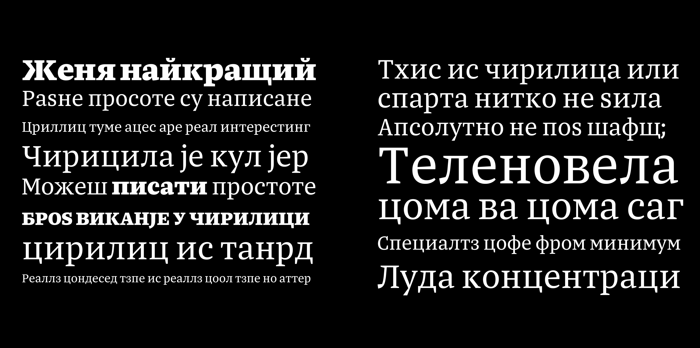
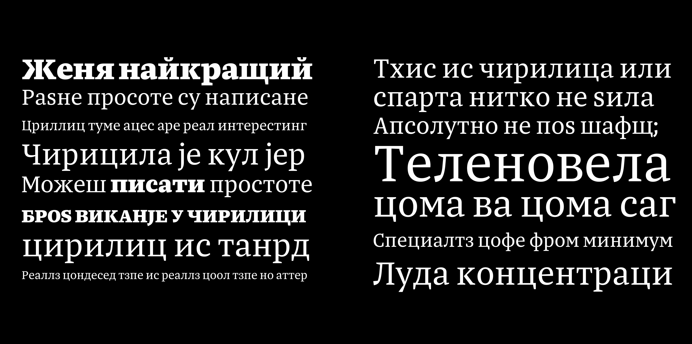

About
Ritko, drawn with purpose, is a typeface system for newspapers. Over the course of the year, Mihael explored all aspects of editorial typography. He chose to work with newspaper type and quickly realized that the challenge was no longer about poor print quality but about defining the appropriate expression. This transformed the challenge he had undertaken and led him to explore every facet of editorial typography. He adopted a structured approach, conducting thorough research into the typographic needs of the medium and performing proper proofing to ensure he was focusing on the right details. The result is a calm and trustworthy typeface that is highly legible even in small sizes.
Mihael Šandro is a type designer from Croatia. After studying digital design in Copenhagen and graphic design in Zagreb, he pursued his passion for letterforms by enrolling in the Type and Media master's program at the Royal Academy of Arts in The Hague. He is currently based in Zagreb, where he lives and works.
 
